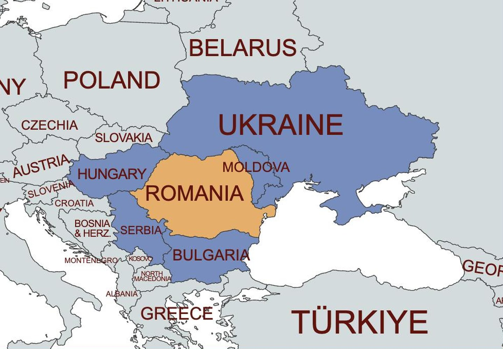
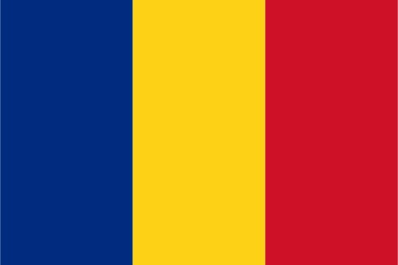
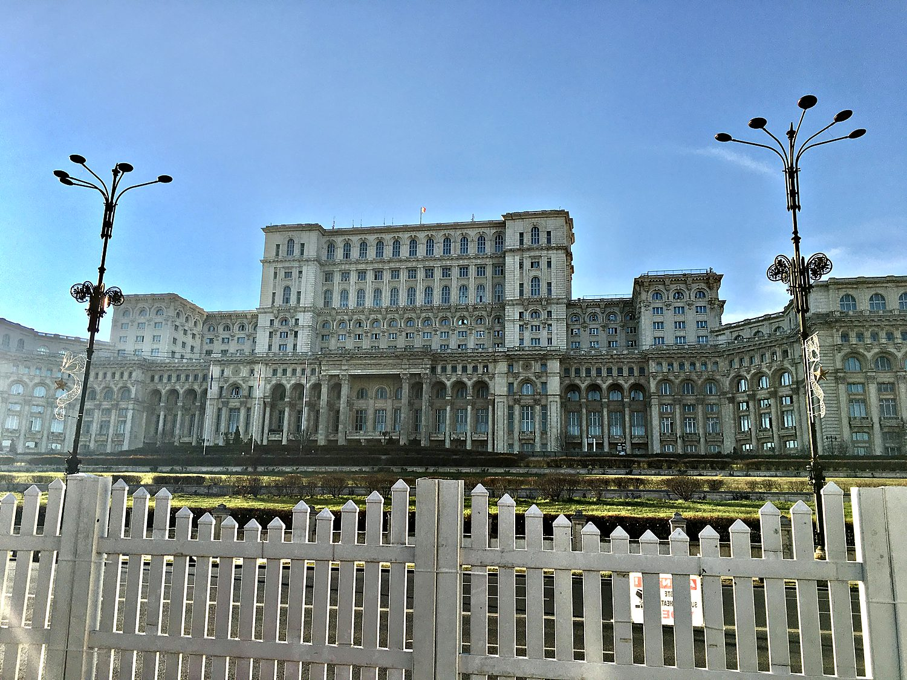
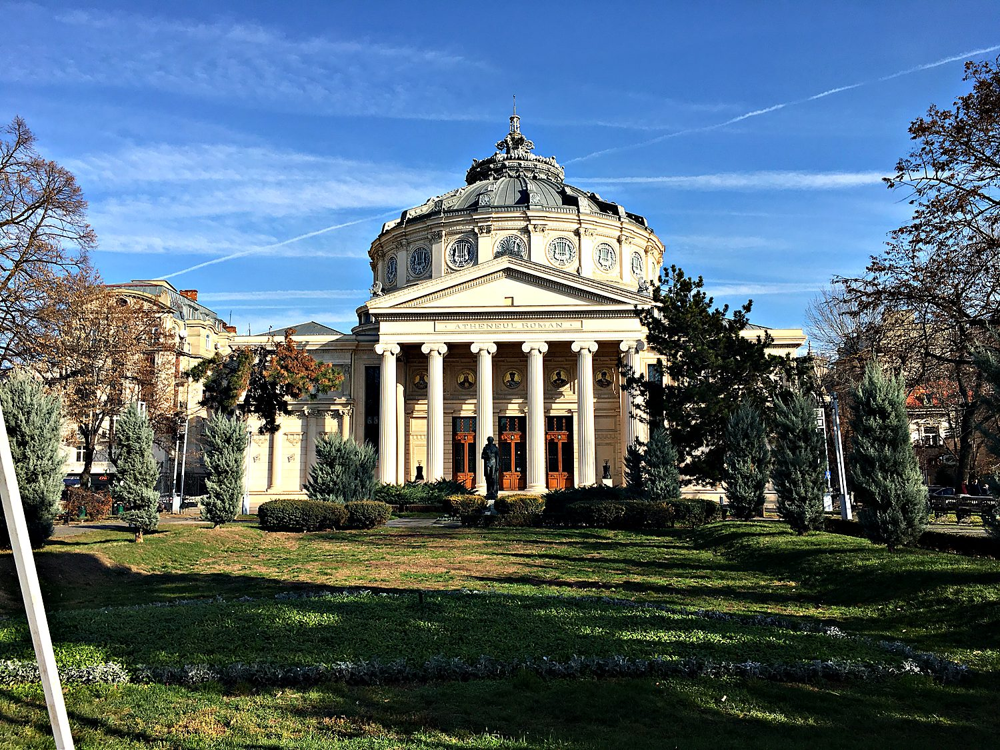
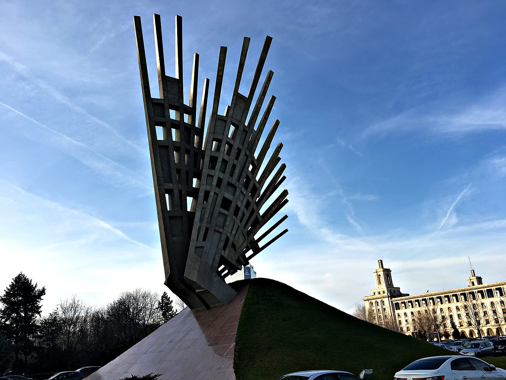

I arrived in Bucharest in December 2019, straight from neighbouring Bulgaria, and found a city that felt like a smaller, less pretentious cousin of Paris. It even boasts a triumphal arch modeled after the French one (see banner above), that commemorates Romania’s victory over the Central Powers in World War I. The people were warm, the grand boulevards were pleasantly faded, and the whole place carried the fascinating scars of the 20th century. Romania has one of the more remarkable Cold War stories in the region. For decades it played the maverick of the Soviet bloc, openly defying Moscow on the world stage while enduring one of the harshest regimes behind the Iron Curtain at home. Walking its streets, that strange double history is never far from view.
Bucharest earned its old nickname, Little Paris, during a Belle Époque golden age of elegant architecture, tree-lined avenues, and its own Arc de Triomphe. The comparison runs deeper than looks, because Romania is an island in a Slavic sea. Its language descends directly from the Latin of the Roman Empire, and the country's very name means "land of the Romans." That inheritance sets Romania apart from all of its neighbours, a Romance-speaking nation surrounded by Slavic and Hungarian ones, proud of a lineage it traces back nearly two thousand years.

That Latin heritage began when the Roman emperor Trajan conquered the kingdom of Dacia in the early 2nd century, and Roman colonists left behind the language that became Romanian. In the Middle Ages the region split into the principalities of Wallachia and Moldavia, the former ruled in the 15th century by Vlad the Impaler, the historical figure who later inspired the legend of Dracula. For centuries the principalities lived under Ottoman influence before uniting into a single Romanian state in the 19th century. That new kingdom is when Bucharest blossomed into the glamorous Little Paris of legend.

Then came communism, and with it Nicolae Ceaușescu, who ruled from 1965 until 1989. He was the maverick who condemned the Soviet invasion of Czechoslovakia and courted the West, yet at home he built a suffocating police state and a personality cult, bulldozing historic Bucharest to raise his monuments while his people queued for food. The regime ended in the violent revolution of December 1989, when Ceaușescu and his wife were overthrown and executed on Christmas Day. Since then, Romania has sought to align itself with the West. It joined NATO in 2004, the European Union in 2007, and the Schengen free travel area in 2025.
No building captures Ceaușescu's megalomania like the Palace of the Parliament, the colossal seat of government he ordered built in the 1980s. It is, by weight, the heaviest building in the world, and among the largest administrative buildings anywhere, with well over a thousand rooms. Raising it required demolishing a huge swath of historic Bucharest and consumed vast resources even as ordinary Romanians went without. The dictator never saw it finished, and today the parliament rattles around inside a structure far too big for it, a monument to ambition curdled into excess.

For a gentler side of Bucharest, there is the Romanian Athenaeum, the exquisite domed concert hall that has been the home of Romanian music since 1888. With its columned portico and richly painted interior, it is the crown jewel of the city's Little Paris era and remains the seat of the country's leading philharmonic orchestra. Where the Palace of the Parliament shouts, the Athenaeum sings. It is a reminder that alongside the grim politics, Romania has always nurtured a deep and refined artistic culture.

This striking modern sculpture is called Aripi, which means “wings”. It is situated near the old House of the Free Press, a Stalinist tower left over from the early communist years. Unveiled in 2016, Aripi is a memorial to the anti-communist resistance and to all those who suffered under the regime. Its soaring metal blades evoke both a bird taking flight and a set of breaking chains. In a city so marked by the weight of its dictatorship, this monument to the people who resisted it felt like a fitting and hopeful note on which to end my visit. Curiously, the most anti-communist countries that I have visited all were part of the Soviet Union’s Eastern Block.
